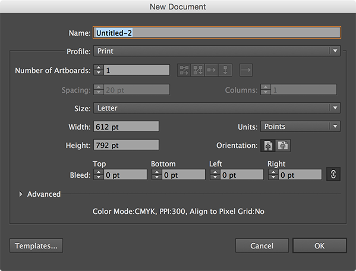
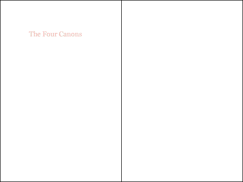
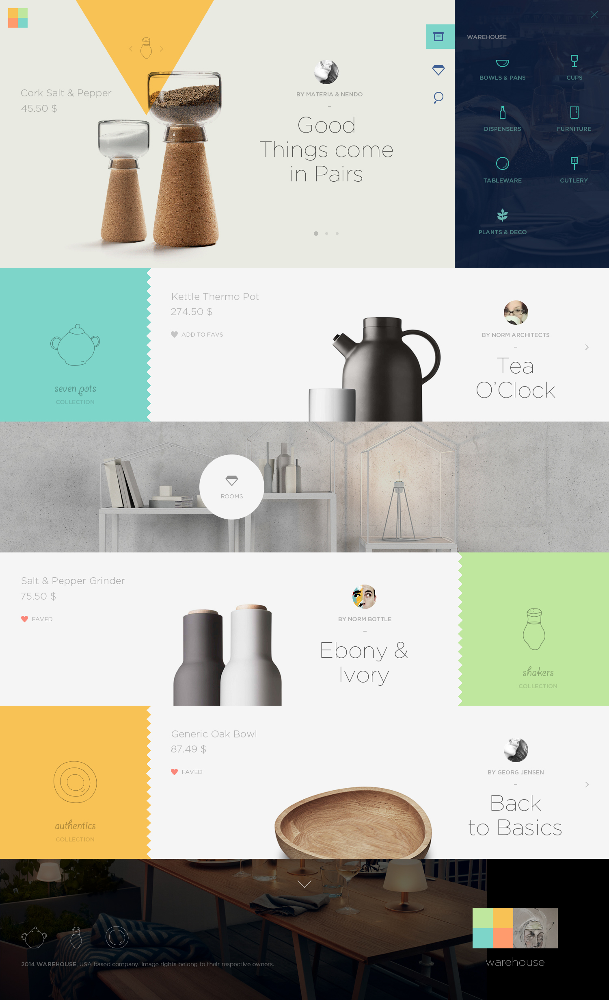

In theory: the layout, content, and design of a page should change based on the context in which it is viewed.
In practice: creating a set of rules (CSS) that work regardless of size or type of device.
It is a systematic approach to design that more closely resembles software development, which is fundamentally systematic.
Making a responsive design is technically simple. Media queries allow you to choose styles to apply only when certain rules for viewport dimensions are met.
The complicated (and fun) part is figuring out how and when to use these media queries.
We’ll return to the technical implementation later, but first we need some context of history.
When thinking responsively, design and development are necessarily entangled because there are no responsive design tools.1
Graphic design's history is rooted in print, and therefore fixed dimensions. From these fixed dimensions, and decades of experimentation and refinement, certain patterns in typography, composition, and page layout have emerged. A working knowledge of these patterns is the foundation of graphic design as a practice and profession.
Some of these patterns are beautiful truths of the visual language that apply across many different formats and media. Some however, are specific to designing for fixed dimensions and break when applied to elements of variable size.
When presented with the challenge of designing websites, graphic designers employed all of the collected knowledge of their profession. However, many of the rules that worked so well for designers before could not be applied to a format without a consistent size. So, one of the first things most designers did was give the webpages they were creating fixed dimensions.
This understandable inability to adapt our skills to a new context, an attempt to turn websites into posters, set web design back 15 years.
In the beginning, webpages were simple pages of text marked up with some tags that would enable a browser to display them correctly. But that meant that the browser, not the designer, controlled how a page would look to the user, and there's nothing that infuriates designers more than having someone (or something) determine the appearance of their work. So they embarked on a long, vigorous and ultimately successful campaign to exert the same kind of detailed control over the appearance of webpages as they did on their print counterparts – right down to the last pixel.
— “Graphic Designers are Ruining the Web” by John Naughton.
Web designers who cannot write basic code often never directly touch the finished products they’re designing. Their role is largely to provide instructions to their team members for how the website should be built. These instructions usually take the form of images, which are very informative for static designs. However, there is no effective way to communicate a responsive design, partially due to a lack of good tools. The best way to explain how a page should behave across a variety of screen sizes is to build it.2 This is a huge advantage to designers that have a basic understaning of CSS and can build a simple responsive layout.
A truly responsive approach requires that we change the way we think about design. Other fields of design focus on creating a “thing”, such as a poster, a logo, or an advertisement. With the web, we cannot design a “thing” instead we must design a system: a set of rules for how the content should behave, not a snapshot of how it should look at a specific size. Usually, these systems of rules exist in our heads, and are consulted as individual decisions are made. For the first time, we can give these systems form (as CSS) and spell them out in perfect specificity.
Unstyled html already works on any screen size. Responsive design is not a matter of making the page work across different devices, it’s a matter of not breaking the page on different devices.
Or as one designer puts it:
The reasons to impose a width are not a matter of taste, they are practical.
The size of your body text doesn’t depend on your personal preference. It depends on reading distance. Since computers are generally further away than books, the metric size of a desktop typeface needs to be bigger than the sizes used for printed matter.
"Responsive Typography: The Basics" from iA.
As Oliver from iA points out, the size of text chosen for various applications, whether billboards, paperbacks, or businesscards, does not vary based on how large the format is, as it first may seem, but rather how far away it will be read from.
In typography, the length of a line of text is called its measure. While there is variation depending on context and typeface used, there are best practices for readable, legible text. Setting a reasonable measure for reading is one of the biggest reasons we’ll be forced to impose widths/max-widths on elements and employ breakpoints.
“Anything from 45 to 75 characters is widely regarded as a satisfactory length of line for a single-column page set in a serifed text face in a text size. The 66-character line (counting both letters and spaces) is widely regarded as ideal. For multiple column work, a better average is 40 to 50 characters.”
The Elements of Typographic Style by Robert Bringhurst. See also The Elements of Typographic Style Applied to the Web.
An example of a website with a measure that is much too long:
Certain elements, like images and videos, have a fixed aspect ratio. When these elements are used on a page, the shape of the window can dramatically change the amount of content that is visible. Imposing widths/max-widths will help us make sure that the around amount of content is shown within the viewport at any screen size.
Now that we’ve established that both images and text can’t be allowed to span the full width of the viewport for practical reasons, we must face the fact that at many screen sizes our primary text or images will only be a portion of the width of the window. In order to use space efficiently, we’ll often end up putting other content in the space created by the narrow elements. This is how some of the most typical website layouts, such as masonry grids and side navigation, came to be.
The most useful and common media queries use min and max page widths, but there are a wide variety of features available within the query. A complete list is available here.
Some devices, without knowing you have paid special attention to how the page should look at all sizes, will attempt to automatically scale the page when it's loaded. This behavior is likely to break your layout. This meta tag tells the browser that the page should not be zoomed in or out and the width of the content should not be adjusted, which will make your CSS render as expected.
{{Example of px values}}
{{Example of % values}}
Although the units are strictly speaking interchangeable, in almost every instance there is a unit that makes the most sense given the system you are designing. When you’re designing your CSS you want to make it as easy as possible to change your mind in the future about your design decisions. Choosing the right units makes your whole page flexible, so that you can change certain decisions, such as the text size, or overall page margin, without breaking things.
The inspector in your browser of choice is an excellent tool when you're doing responsive design and development. You can use it to resize the page without disturbing your other tabs, view how styles are being computed and applied in the rendered code, and tweak specific values in real time before transferring them over to your actual files.
Use your new skills to create a simple, fully responsive layout for the provided article (source files), using the minimum number of breakpoints.
Things to keep in mind:
1: Many design tools are trying to accomodate responsive thinking, such as Macaw and Adobe Edge Reflow, but they are not widely used.
2: Luckily, CSS is relatively easy to learn and approachable, unlike Objective-C, for example.